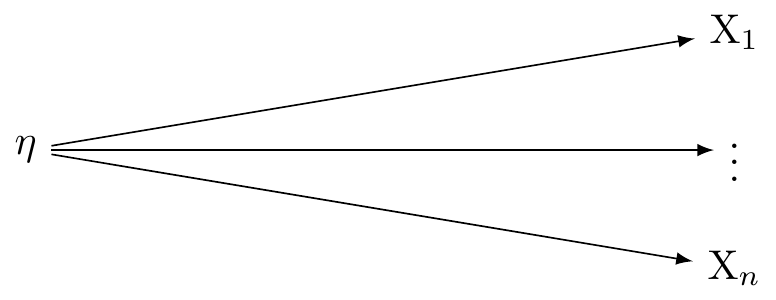
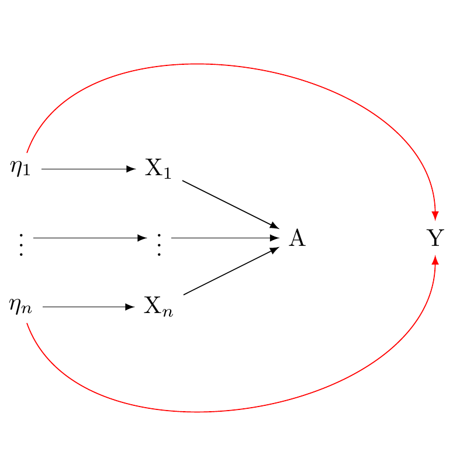

[1] "/Users/joseph/GIT/00_drafts"Better causal diagrammes (DAGS) for counterfactual data science
Abstract
How controlling for baseline measures mitigates against correlated measurement errors
Controlling for a baseline measure of the exposure and the outcome is essentially controlling for potential confounding caused by any time-invariant characteristics that might influence both the exposure and the outcome. Such confounding is suppressed because any effect of these characteristics on the outcome is supposed to be the same at baseline and at follow-up, assuming no interaction with time.
When it comes to measurement error, the situation is somewhat different. If the exposure and outcome are both measured with error, and the errors are correlated, this would typically introduce bias in our estimate of the causal effect. We have seen that if this this error is systematic and non-differential, it may lead to an attenuation of the estimated causal effect.
Including baseline measurements of the exposure and outcome in our model can, in theory, help mitigate this bias. This is because the model would, in effect, be using the change in the exposure and outcome from baseline to follow-up to estimate the causal effect. If the measurement error is consistent across time (i.e., it is a constant amount or a constant proportion of the true value), then using these change scores could help to control for it.
However, this assumes that the measurement error has no directionality and is not differential with respect to time. If the measurement error varies over time or in relation to other variables in the model, then controlling for baseline measurements may not fully correct for it.
Here is a simple mathematical representation of the conditions. Let \(A_0\), \(A_1\) denote the exposure at baseline and follow-up, and let \(Y_0\), \(Y_1\) denote the outcome at baseline and follow-up. The true values are denoted without primes, and the measured values with primes. We assume the measurement error is additive:
\(A'_0 = A_0 + U_0\),
\(A'_1 = A_1 + A_1\),
\(Y'_0 = Y_0 + V_0\),
\(Y'_2 = Y_2 + V_2\),
where \(U_0\), \(U_1\) are the measurement errors for the exposure at baseline and follow-up, and \(V_0\), \(V_2\) are the measurement errors for the outcome at baseline and follow-up. If the errors are correlated, then \(Cov(U_0, V_0) \neq 0\) and/or \(Cov(U_1, V_2) \neq 0\).
In a model that includes \(A'_0\) and \(Y'_0\) as covariates, the estimated effect of \(A'_1\) on \(Y'_2\) is essentially the estimated effect of the change in the exposure from baseline to follow-up on the change in the outcome from baseline to follow-up, controlling for the baseline measures. This will mitigate the bias arising from to correlated errors if the following conditions hold:
\(E(U_0) = E(U_1)\) and \(E(V_0) = E(V_2)\) (i.e., the expectation of the measurement errors does not change over time),
\(Cov(U_0, V_2) = Cov(U_1, V_2)\) (i.e., the correlation between the errors does not change over time).
If these conditions do not hold, then the bias may not be fully controlled for, and other methods may be needed.
This has assumed that the measurement errors are additive and have no directionality. If the errors are multiplicative or have some other form, or if they vary with the level of the true values or with other variables in the model, then this analysis may not apply.
Casual diagrams clarify the structural assumptions underlying classical measurement theory
Researchers working in cultural evolution often incorporate multi-item constructs into their panel study designs, a practice which is aligned with the recommendations of conventional psychometric theory. However, classical psychometric theory emerged devoid of causal theories, and as noted by Tyler VanderWeele, issues arise when evaluating the causal assumptions of formative and reflective models (Tyler J. VanderWeele 2022a). This discussion will summarise these issues and expand on how they manifest in repeated measures research.
There are two prevailing approaches in this area: formative and reflective models. The focus here will be on reflective models, though it should be noted that the issues identified also apply to formative models, as outlined by VanderWeele [Tyler J. VanderWeele (2022a)]1.
In a reflective model, researchers posit that a latent variable gives rise to the observed indicators. Each observed variable (or indicator) is seen as a ‘reflection’ or manifestation of the latent variable. If \(X_i\) is an observed variable (indicator), \(\lambda_i\) is the factor loading for \(X_i\), \(\eta\) is the latent variable, and \(\varepsilon_i\) is the error term associated with \(X_i\), the reflective model can be formulated as:
\[X_i = \lambda_i \eta + \varepsilon_i\]
Factor analysis typically assumes a common latent variable, which is responsible for the correlations observed among the indicators. The causal assumptions linked to this concept are demonstrated in Figure Figure 2.

The statistical implications of the reflective model suggest that the observed variables (indicators) are reflections or manifestations of the latent variable, which is mathematically expressed as \(X_i = \lambda_i \eta + \varepsilon_i\). The factor analytic tradition goes one step further by proposing a structural assumption that a univariate latent variable causally affects the observed variables. Hence, the reflective model yields \(X_i = \lambda_i \eta + \varepsilon_i\), which is assumed to underpin the structural assumptions shown in Figure Figure 3.

VanderWeele contends that while the statistical model \(X_i = \lambda_i \eta + \varepsilon_i\) concurs with the structural assumptions in Figure Figure 3, it can also align with various causal models. For instance, the statistical model is compatible with the depiction in Figure (fig_dag_multivariate_reality_again?), where unique latent variables give rise to distinct indicators, some of which (but not necessarily all) have a causal effect on the outcome. The statistical model does not provide clarity on which structural model is accurate. Additionally, the assumption that a univariate underlying reality forms the basis of the formative and reflective latent factor models, which is more robust than previously acknowledged in psychometric literature, fails to withstand empirical scrutiny for certain frequently used measures (Tyler J. VanderWeele and Vansteelandt 2022).

VanderWeele suggests that construct measures can still be utilised in applied research by extending the theory of causal inference under multiple interventions to factor models (Tyler J. VanderWeele 2022b) (for a detailed discussion, refer to Appendix 2).
By expressing our measured variables as functions of indicators, and assuming the true underlying reality as a coarsened measure of a potentially complex latent reality, we can consistently estimate causal effects under this extended theory. This approach is illustrated in Figure 4.
Measurement Error and Construct Measures
Consider a three wave panel where, for simplicity, we assume no unmeasured confounding is present. Our exposure \(A\) can be measured by a function of indicators, denoted as \(A_{f(A_1, A_2, ..., A_n)}\), forming a coarsened state from a multivariate reality. Each element of this reality has a corresponding structural component, denoted as \(\eta_{A_1}, \eta_{A_2}, ..., \eta_{A_n}\). These components are measured with their respective error terms, \(U\eta_{A_1}, U\eta_{A_2}, ..., U\eta_{A_n}\).
Similar to the exposure, our outcome Y can be conceptualised as a function of indicators, \(Y_{f(Y_1, Y_2, ..., Y_n)}\), of a latent reality. This reality is expressed through the latent components \(\eta_{Y_1}, \eta_{Y_2}, ..., \eta_{Y_n}\), each having their associated error term \(U\eta_{Y_1}, U\eta_{Y_2}, ..., U\eta_{Y_n}\).
Figure 5 illustrates the assumed reality. It shows possible paths for confounding via directed measurement error. Each path is represented by a structural component \(\eta_{A_n}\) and its associated error term \(U\eta_{Y_n}\). Here we present three possible confounding paths that are possible from directed measurement error.
Note that the potential for confounding arising from measurement error in panel designs depends fundamentally on the particular relationships and dependencies among variables, not merely their quantity. However, we can see here that, theoretically, a larger number of latent states or error terms could amplify the possibilities for confounding, In a simplistic scenario, every latent variable associated with an exposure could affect each error term of an outcome, leading to an expansive network of confounding paths
Introduction
VanderWeele, Tyler J. 2022a. “Constructed Measures and Causal Inference: Towards a New Model of Measurement for Psychosocial Constructs.” Epidemiology 33 (1): 141. https://doi.org/10.1097/EDE.0000000000001434.
———. 2022b. “Constructed Measures and Causal Inference: Towards a New Model of Measurement for Psychosocial Constructs.” Epidemiology 33 (1): 141. https://doi.org/10.1097/EDE.0000000000001434.
VanderWeele, Tyler J, and Stijn Vansteelandt. 2022. “A Statistical Test to Reject the Structural Interpretation of a Latent Factor Model.” Journal of the Royal Statistical Society Series B: Statistical Methodology 84 (5): 20322054.
Footnotes
In a formative model, the observed variables are thought to cause the latent variable. As in the reflective model, there is a single latent variable. This latent variable, however, is considered the effect of the underlying indicators. In mathematical terms, if \(\eta\) represents the latent variable, \(\lambda_i\) denotes the weight for \(X_i\) (the observed variable), and \(\varepsilon\) is the error term, the latent variable \(\eta\) can be described as a composite of the observed variables \(X_i\), expressed as: \(\eta = \sum_i\lambda_i X_i\).↩︎